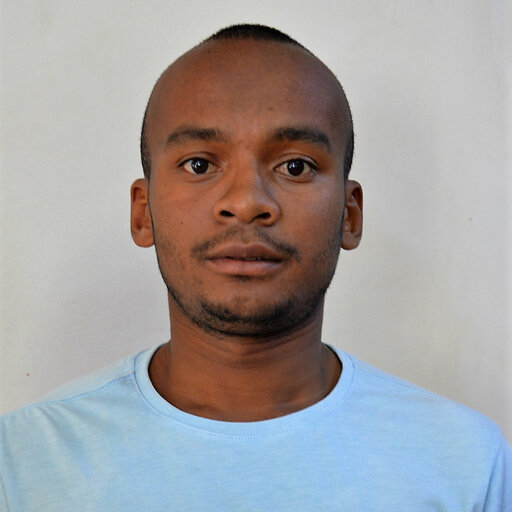

About Me

I hold a PhD in Mathematics from the Université de Fianarantsoa, Madagascar, completed in October 2026. My research focuses on algebraic combinatorics, particularly combinatorial species, symmetric functions, and representation theory.
My doctoral thesis, Categorification of the Cycle Index Series, develops a categorical framework for studying cycle index series associated with combinatorial structures and their relationships with Schur positivity, plethysm, and Kronecker products.
My doctoral research was conducted under the supervision of François Bergeron (Université du Québec à Montréal, Canada) and Benjamin Randrianarivina (Université de Fianarantsoa).
My doctoral studies were supported by the International Mathematical Union through the GRAID programme .
Research
My research lies at the intersection of algebraic combinatorics, combinatorial species, symmetric functions, and representation theory. I am particularly interested in the algebraic structures arising from cycle index series and their connections with the Kronecker product.
Combinatorial Species
Cycle index series, combinatorial constructions, categorification, and morphisms between species-theoretic frameworks.
Symmetric Functions
Schur positivity, plethysm, molecular bases, and structural properties of symmetric functions.
Representation Theory
Symmetric groups, character theory, Kronecker products, and connections with algebraic combinatorics.
Computational Combinatorics
Symbolic computation, experimental mathematics, and algorithmic investigations using SageMath.
Publications
Closed Formula for Kronecker Structure Constants of a Molecular Basis of Homogeneous Symmetric Functions
Enumerative Combinatorics and Applications, Volume 7 (2027), Article S2A5.
Species, Symmetric Functions and Kronecker Product
Enumerative Combinatorics and Applications, Volume 6, 2026.
Theses and Preprints
Categorification of the Cycle Index Series
PhD Thesis, Université de Fianarantsoa, Madagascar, October 2026.
Schur Expansion of the Cycle Index Series of Species
Master's Thesis, Université de Fianarantsoa.
Class Order of the Cycle Partition (nm) in Sn ≀ Sm
Academic Activities
Contributions to the Online Encyclopedia of Integer Sequences. View contributions
Participation in mathematical discussions and problem solving. View profile
Computational problem solving and programming. HackerRank profile
Projects and Applied Interests
Quantitative Finance
Mathematical modelling, statistical methods, and computational approaches to financial systems.
Area of interestData Science and Analytics
Statistical analysis, visualization, predictive modelling, and applications of computational mathematics.
Area of interestClimate and Environmental Modelling
Mathematical and statistical approaches to environmental and climate-related problems.
Area of interestBusiness Intelligence
Power BI dashboard for e-commerce sales and traffic analysis, using DAX and business performance indicators.
Completed projectReadings and Learning
Gregory Zuckerman, 2019.
Sam Lau, Joseph Gonzalez, and Deborah Nolan.
Aurélien Géron.